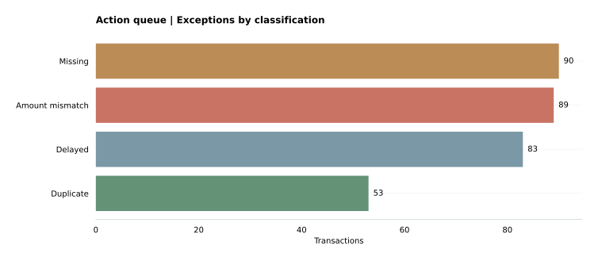

01 / Business question
How can finance operations systematically detect missing settlements, duplicate credits, amount mismatches and delayed bank postings?
A provider-to-bank reconciliation workflow that classifies missing, duplicated, mismatched and delayed records using stable transaction references.
02 / Analytical approach
- Generate separate expected settlements and bank credit statements with unique synthetic references.
- Aggregate bank records before joining to prevent duplicate records from distorting match counts.
- Classify missing records, duplicate entries, amount variance and settlement delay.
- Summarise exception counts, absolute variance and expected value with no corresponding credit.
03 / Results from generated data
Of 2,100 provider transactions, 1,785 passed all reconciliation tests (85.0%). 315 need review, including 90 missing-credit cases and 53 duplicate references. Absolute exception variance totals ₦32.82m; that is not equivalent to financial loss.

04 / Recommended actions
- Create daily reconciliation cutoffs and immutable input snapshots.
- Assign aging, ownership and investigation states to exceptions.
- Extend matching for partial settlement batches before using real bank data.
05 / Limitations
Financial exposure is illustrative. Unreconciled variance is not confirmed loss and requires investigation and cutoff reconciliation.